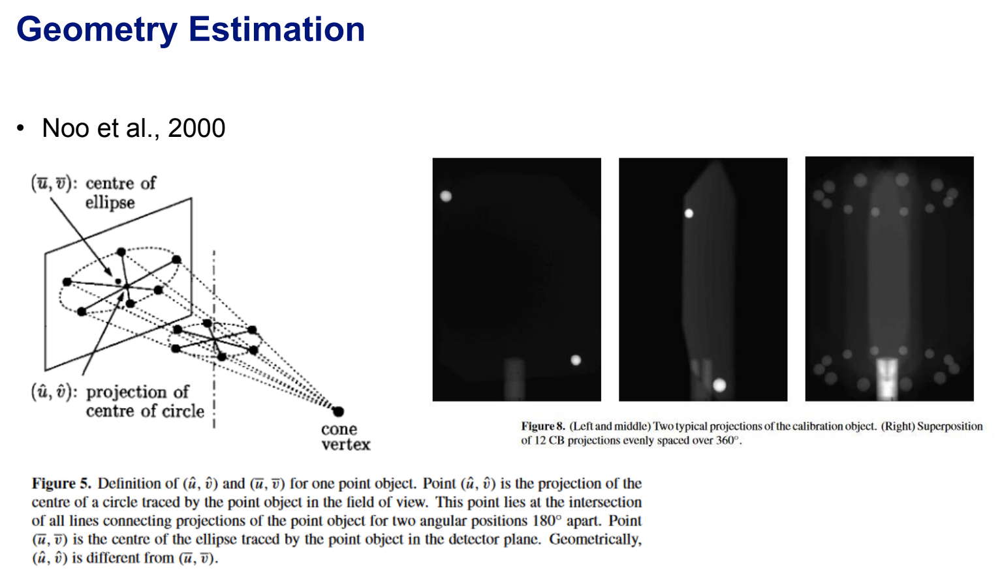
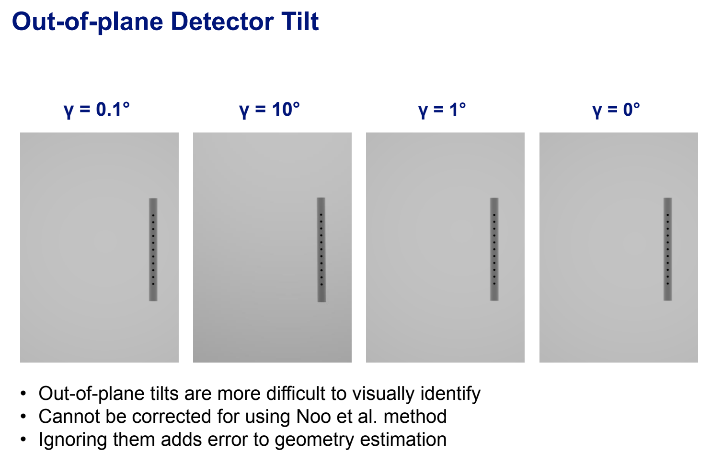
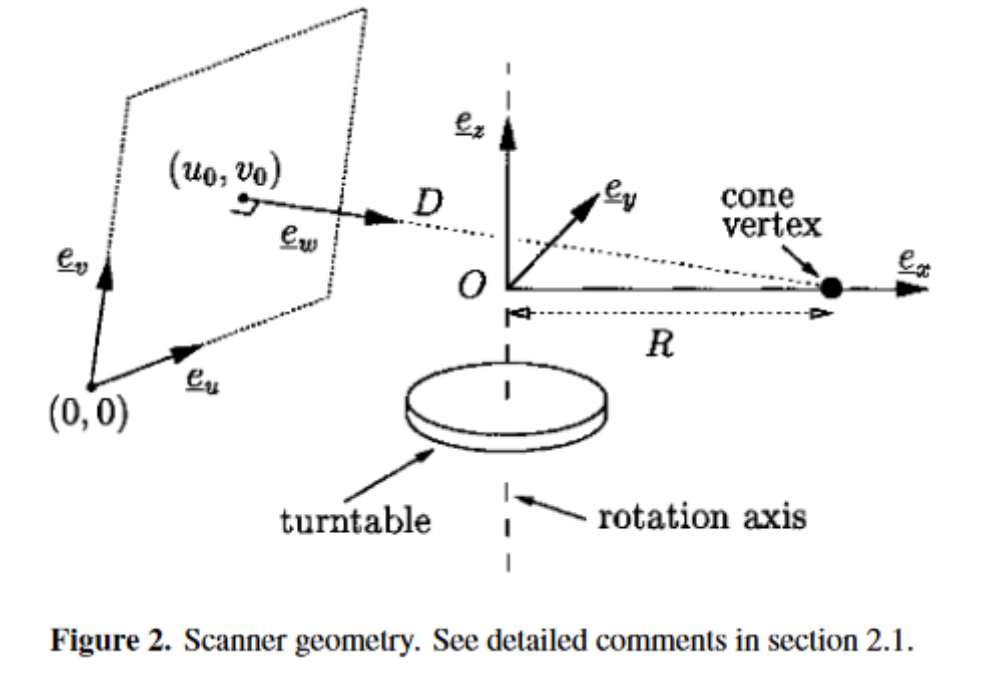
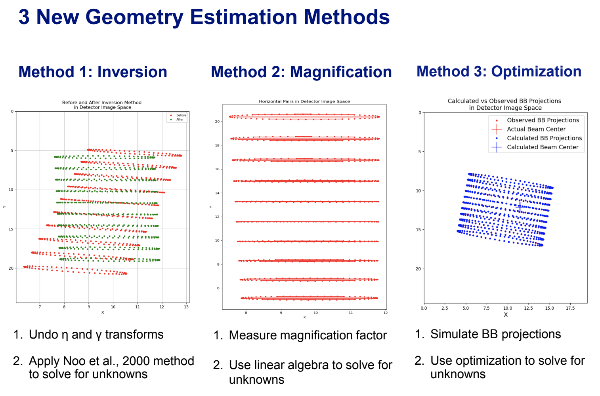
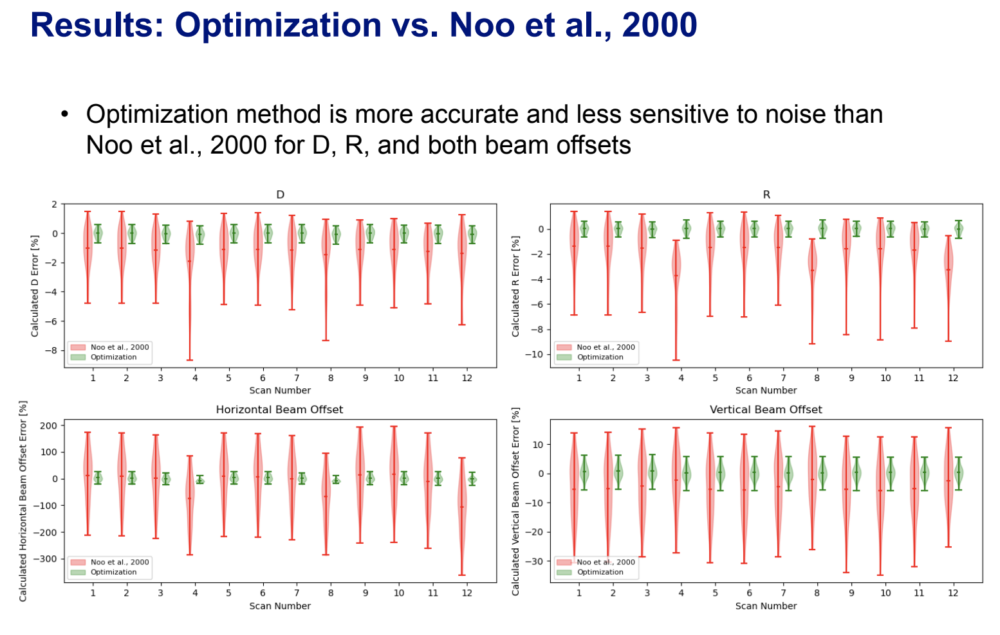

Challenging the Current CT Calibration Techniques at Los Alamos National Lab
Living and working in Los Alamos when Christopher Nolan’s ‘Oppenheimer’ hit the theaters was a surreal experience. It allowed me to place myself directly in the shoes of the Manhattan Project employees and inspired me to push myself for the betterment of my country. It deepened my love for math, science, and thinking.
As an intern in the Non-Destructive Testing & Evaluation department, I was learning about the mathematical underpinnings of x-ray computed tomography (CT), and how this technology is harnessed at the Lab to perform quality assurance on the nuclear bomb detonators. The project I was given upon arrival to the Lab involved running computer-simulated CT scans of something called a geometry phantom. Geometry phantoms are used to back-calculate the geometric distances inside a CT cabinet, which are necessary for calibration and image reconstruction. Though interesting, I quickly finished this project to the satisfaction of my mentors, and with over half of the summer remaining, I was in search of more work to do.

At the Lab, students are encouraged to attend lectures on topics ranging from plutonium production to quantum physics to the history of the Manhattan Project. It was at one of these talks, titled “The History of Computational Fluid Dynamics”, that I was inspired by the story of mathematician John von Neumann to push past the boundaries that were set for me with my assigned project.

I dug back into the math surrounding CT and geometry phantoms, filling a whole notebook with scribbles of math inspired by Noo et al. (2000), the current standard for geometry estimation. However, I realized that a key assumption of Noo et al.—that the detector panels are perfectly perpendicular to the cone beam of x-rays—was not being verified at the Lab. See, the detector panels were calibrated once upon installation, but even after years of potential sagging, they were never re-calibrated.

After running simulations that proved that this had a drastic effect on calibration accuracy (causing up to 300% error in some cases), I called on the Lab technicians to see if they could visually identify a saggy detector based on the projected image. Their cocked heads and squinted eyes motivated my next quest.

I sought to find a way to not only identify saggy detectors using the geometry tool, but to correct for it retroactively, so that the detectors don’t have to be re-calibrated. I filled another 2 notebooks with scribbled math, trying to derive equations to solve these issues. Along the way, I developed a much better understanding and appreciation for optics, as I re-derived magnification equations and added in new variables that had previously been unaccounted for. I translated my math into various algorithmic attempts to solve the problem, and compared their efficacy.

As it turns out, the best-performing method was optimization, which relied on a forward ray-tracing formula to pinpoint the exact geometry values from the cabinet. Compared to the Noo et al. method, which was developed in 2000 and has set the standard ever since, my optimization method showed not only an 8-fold increase in accuracy, but a five-fold increase in noise resistance as well (something that is very important in real-world applications).

Pleased with my findings, I created an detailed presentation to sum up my summer of hard work, linked here: GlomskiLANLPresentation. I focused on creating intuitive, engaging visuals to effectively communicate my ideas to the other Lab members. I received a standing ovation and many compliments at the conclusion of my presentation, both for the work I had done and for my presentation’s quality. My mentors offered to send me to the 2024 ASTM Conference to share my findings with other Non-Destructive Testing groups.